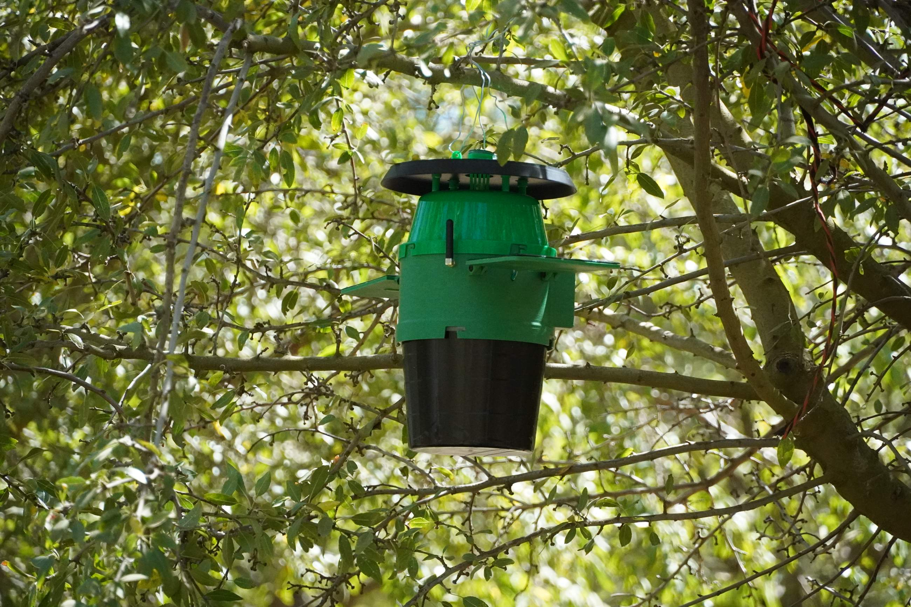
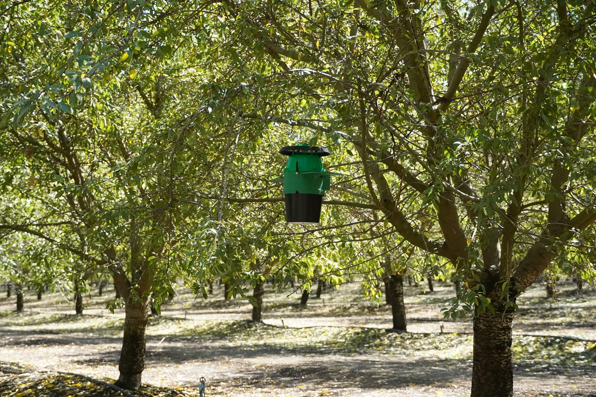

Orchard pest monitoring
Know what's in your traps without walking every row.
Every trap counts the insects that enter it and logs the conditions around it, then reports to one dashboard. You watch pest pressure build instead of finding it on your next walk.
A weekly trap check covers about an hour. It's the other 167 that cost you.
Hand-checking traps is still the standard, and for good reason — it works. It just doesn't scale to every trap, every day.
SmartTrap counts in between. Each trap logs the insects that enter it alongside the temperature and humidity around it, and all of it lands in one dashboard you can open from the truck.
The trap does the counting
Infrared beams cross the detection chamber and register each insect on its way in. Nothing to tally by hand.
The whole block in one view
Every trap on a satellite map with its latest count, the conditions around it, and how long it's been since it last reported.
Cheap enough to cover the block
No cameras, so there are no photos to move and no image processing to pay for. Traps share a single gateway between them.

SmartTrap
What sits in the orchard
Two layers of infrared beams line the detection chamber. An insect on its way in breaks both, and the second layer is what keeps one insect from being counted twice.
The trap records the count with the temperature and humidity at that moment, keeps its own backup, and runs on a solar-charged battery.
See how it works
Dashboard
What you open in the morning
Traps on a satellite map, a card for each one, and history charts going back as far as the trap has been running. Heatmaps fill in the space between traps — temperature, humidity, and where the beetles are concentrating.
Go to the dashboardA detection is a line of text, not a photograph.
That one decision sets the shape of everything else. A record this small moves over a low-power link, which is why the traps run on a battery and share one cellular connection between them instead of each paying for its own.
Node
Which trap the record came from.
Timestamp
When the beam broke, to the second.
Event
What happened: an insect counted in, an insect counted out, or a scheduled temperature or humidity reading.
Value & unit
The reading itself, with the unit it was measured in.
Battery
Volts at the trap when the record was written.
Signal
How well the trap was reaching its gateway.
Temperature and humidity are logged as a pair about every half hour. Counts are logged as they happen.
Current focus
Early detection of Carpophilus truncatus in California almonds
SmartTrap is in field testing against this invasive beetle, with traps reporting from a California almond block. The aim is to see it arrive rather than to find out later how long it had been there.
Why this pest matters to almond growers, and what an early warning makes possible.